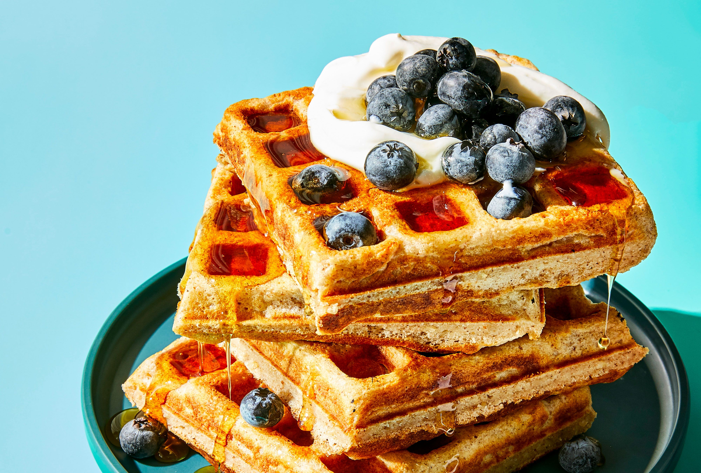

Waffles

Description
This waffle recipe delivers golden, crispy-on-the-outside,
fluffy-on-the-inside perfection. Whether topped with fresh
fruit, a drizzle of syrup, or a dollop of whipped cream,
these waffles are sure to become a breakfast favorite for
the whole family.
Ingredients
- 1 3/4 cups all-purpose flour
- 2 tbsp sugar
- 1 tbsp baking powder
- 1/4 tsp salt
- 2 eggs
- 1 3/4 cups milk
- 1/2 cup cooking oil or butter, melted
- 1 tsp vanilla
Steps
- In a medium bowl stir together flour, sugar, baking powder,
and salt. Make a well in center of flour mixture; set aside.
- In another medium bowl beat eggs slightly; stir in milk,
oil, and vanilla.
- Add egg mixture all at once to flour mixture. Stir just until
moistened (batter should still be lumpy).
- Pour 1 to 1 1/4 cups batter into the center grids of a
preheated, lightly greased waffle iron.
- Bake according to manufacturer's directions. Repeat with
remaining batter. Serve warm.